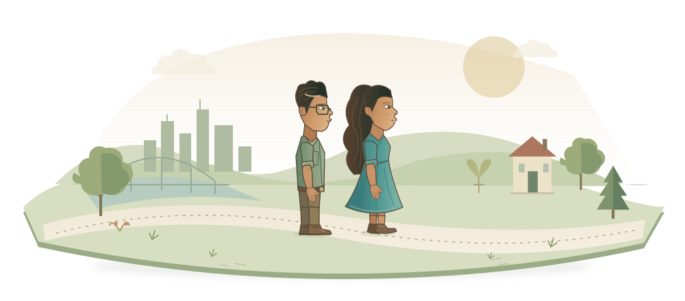

Hey, I’m Brandon.
Make yourself at home.
I build little tools, pull at stubborn problems, and share what I learn. This notebook is a place to have a look around.
Director of AI at Western States Fire Protection.
Marine veteran. Dad. Still a student.
Pick a place to explore. The workbench below is always open, too.
AI should work for humans,
not the other way around.
That’s how I approach the work: start with the people doing it. Find out what’s getting in their way. Build something that helps.
Welcome to the workbench.
Pick something up. See what makes it tick.
So many tools. One place to start.
I wanted an easier way to try the coding tools I kept hearing about. So I built one.
What are you curious about today?
A small browser sketch of the idea. Nothing is installed or run.
Explore terminal-jarvis on GitHub ↗You get to see the gears turn.
I’m learning how coding agents work by building one in Go. Here’s a tiny version of the loop, with you at the controls.
An illustrative walkthrough. No model calls, files, or commands.
Explore agent-harness on GitHub ↗Sometimes you need to see it.
Watching the steps can make an algorithm easier to understand. Take this one a step at a time.
Bubble sort compares neighbors and swaps them if they’re out of order.
A website I can keep scribbling in.
This is where the projects, family, and half-finished ideas meet. Try a different ink. Leave a little mark.
Your sketch stays in this tab until you refresh.
A few chapters
from the rest of life.
A Marine, a husband, a dad. Software came later. There’s a whole life around the work, and these are a few of the people and places in it.

We’d apparently met before.
Sunday school, as it turns out. Maria and I met again in 2012. We weren’t dating yet, but this is a good place to start our story.
Dating, and a different day job.
We started dating in 2014. I also began my Marine Corps years, working as a legal specialist at Camp Lejeune in North Carolina.
We made it official.
We got married in 2016. I was still at Camp Lejeune, moving from legal specialist work into court reporting later that year.
A long way from home.
Morón de la Frontera, Spain. I served as a legal chief there through April 2019. There was a whole working life before my first software engineering job.
Home got a little bigger.
Our first kiddo arrived in 2019. Back in Nebraska, we were learning how to be parents.
Then came the code.
I studied full-stack development at devCodeCamp and joined Leidos as a software engineer later that year. Family life was already well underway.
Another little person joined us.
Our second kiddo arrived in 2024. I was at Fiserv by then, settling into senior engineering work.
Still learning. Still home.
Omaha is home. I’m Director of AI at Western States Fire Protection, and I’m working toward finishing my UNO degree in December.
Room for one more.
We’re expecting our third kiddo in 2027.
Always happy to chat.
If you’d like to understand how I make AI work for people in organizations, reach out. Or bring a stubborn problem, a little tool, or something to teach me.
Email meFrom people I’ve worked with.
“His patience and approach to teaching stood out to me.”
“Brandon brings a collaborative mindset, a willingness to explore new technologies, and a strong focus on finding practical ways to improve development workflows.”
“Brandon has continually put others ahead of himself in the pursuit of team excellence.”